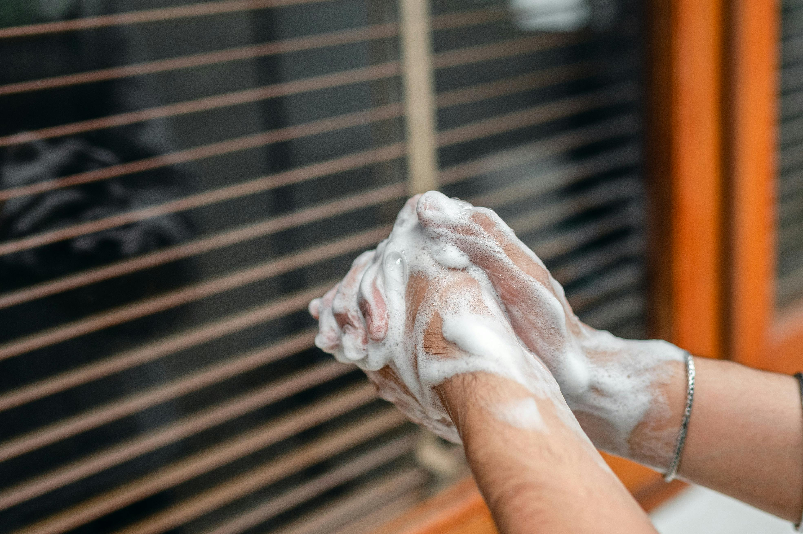

Jabón líquido de manos vs. jabón en barra: cuál limpia mejor y cuál cuida más la piel
Parece una decisión trivial, pero la elección entre jabón líquido y jabón en barra tiene implicaciones reales en higiene, salud de la piel y costo por uso. Ambos limpian, pero lo hacen de formas distintas, con ingredientes distintos y con resultados distintos según el tipo de suciedad, la frecuencia de lavado y el tipo de piel de quien los usa.
Esta guía explica qué hay detrás de cada formato, cuándo conviene uno sobre el otro y qué factores realmente importan al momento de elegir.

Cómo limpia el jabón: el mecanismo básico
Antes de comparar formatos, vale entender qué hace el jabón en general. Tanto el jabón líquido como el de barra contienen surfactantes, moléculas que tienen un extremo que atrae el agua y otro que atrae la grasa. Al frotar el jabón con agua sobre la piel, estas moléculas rodean las partículas de grasa, suciedad y microorganismos, y los arrastran al enjuagar.
La diferencia no está en el mecanismo, que es el mismo, sino en la composición química del producto, la concentración de surfactantes, los ingredientes adicionales y el pH de cada formato.
Composición: en qué se diferencian realmente
Jabón en barra
El jabón en barra tradicional se obtiene mediante un proceso llamado saponificación: la reacción entre grasas o aceites (de origen animal o vegetal) y una base fuerte como la soda cáustica. El resultado es una sal de ácido graso que actúa como surfactante natural.
Su pH es naturalmente alcalino, generalmente entre 9 y 10. La piel humana tiene un pH ligeramente ácido, alrededor de 5.5, conocido como manto ácido, que funciona como barrera protectora contra bacterias y hongos. Cada lavado con jabón de barra alcalino eleva temporalmente ese pH, y la piel tarda entre 30 minutos y una hora en recuperar su equilibrio natural. En personas con piel sensible o seca, el uso frecuente puede traducirse en sequedad, descamación o irritación.
Los jabones en barra de calidad, como los elaborados con grasas de origen animal y vegetal seleccionadas, mitigan este efecto gracias a los ácidos grasos residuales que quedan en el jabón tras la saponificación y que aportan una acción humectante leve.
Jabón líquido de manos
El jabón líquido se formula con surfactantes sintéticos, generalmente derivados del coco o de otras fuentes vegetales, como el cocoamidopropil betaína o el lauril éter sulfato de sodio. Estos ingredientes permiten controlar con precisión el pH del producto final, que en las mejores fórmulas se mantiene entre 5.5 y 7, mucho más cercano al pH natural de la piel.
Además de los surfactantes, las fórmulas modernas de jabón líquido incorporan humectantes como la glicerina, agentes suavizantes y en algunos casos extractos botánicos. Esto convierte al jabón líquido en un producto que limpia y al mismo tiempo repone parte de la humedad que el lavado elimina.
Capacidad de limpieza: ¿cuál elimina más gérmenes?
Estudios comparativos han evaluado la eficacia antimicrobiana de ambos formatos y los resultados son consistentes: ambos son igualmente efectivos para eliminar bacterias y virus cuando se usan correctamente, es decir, con agua, durante al menos 20 segundos de fricción activa y con enjuague completo.
La diferencia no está en el poder desinfectante del producto sino en la técnica. Un lavado apresurado con jabón líquido es menos efectivo que un lavado correcto con jabón en barra, y viceversa.
Donde sí existe una diferencia práctica es en el riesgo de contaminación cruzada. Una barra de jabón compartida acumula en su superficie residuos de suciedad, células de piel y microorganismos entre uso y uso. En condiciones normales de hogar esto no representa un riesgo significativo, pero en entornos de salud, cocinas profesionales o lugares de alto tráfico, el jabón líquido con dispensador cerrado es la opción más higiénica por diseño.
Cuidado de la piel: ventaja clara del jabón líquido
Este es el punto donde la diferencia es más concreta y medible.
El jabón líquido formulado con pH neutro o ligeramente ácido, glicerina y agentes humectantes respeta en mayor medida el manto ácido de la piel. Para personas que se lavan las manos con frecuencia —trabajadores de la salud, personas con niños pequeños o quienes manipulan alimentos— el jabón líquido reduce acumulativamente el daño a la barrera cutánea.
El jabón en barra, por su pH alcalino, es más agresivo con la piel en usos repetidos. Sin embargo, existen barras formuladas con supergrasa (exceso de aceites no saponificados) que compensan este efecto y resultan bastante suaves. El jabón Rey en barra, elaborado con grasas de origen animal y vegetal de alta calidad, es un ejemplo de jabón sólido tradicional que mantiene propiedades suavizantes gracias a su composición.
Resumen práctico:
- Piel normal, uso moderado: ambos formatos funcionan bien
- Piel seca o sensible: jabón líquido con glicerina es la mejor opción
- Uso muy frecuente (más de 6 lavados al día): jabón líquido neutro o con humectantes
- Uso ocasional o preferencia por formato sólido: jabón en barra de calidad es perfectamente válido
Fragancias y variantes: más que un tema estético
Las fragancias en el jabón líquido no son solo un detalle comercial. En contextos domésticos, el aroma asociado a la limpieza influye en la percepción de higiene y en la frecuencia con que los miembros del hogar se lavan las manos, especialmente los niños.
Los jabones líquidos con fragancias como coco, frutos verdes o verbena combinan función limpiadora con una experiencia sensorial que fomenta el hábito de lavado. Las presentaciones con válvula dosificadora tienen además la ventaja de controlar la cantidad de producto por uso, lo que reduce el desperdicio.
Para entornos donde la fragancia puede ser un problema —cocinas industriales, laboratorios o personas con alergias respiratorias— el jabón de manos neutro sin aroma ni color es la alternativa correcta. Es inodoro, incoloro y formulado exclusivamente para limpieza efectiva sin interferir con olores del entorno.
Costo real: precio por uso, no precio por envase
Un error frecuente al comparar ambos formatos es mirar el precio del envase completo sin considerar el rendimiento real.
El jabón líquido concentrado en presentaciones de 4 o 20 litros tiene un costo por lavado significativamente menor que el mismo producto en envase de 500 ml o 1 litro. Un dispensador dosificador dispensa aproximadamente 1.5 ml por uso, lo que significa que un galón de 4 litros rinde aproximadamente 2.600 lavados.
El jabón en barra, por su parte, tiene una pérdida de material inevitable: se ablanda con el agua, se deja olvidado en el jabonero con agua acumulada y se fragmenta al final de su vida útil. En uso individual esto es manejable, pero en baños compartidos o de uso frecuente el desperdicio es mayor de lo que parece.
Cuándo usar cada uno: guía rápida
| Situación | Recomendación |
|---|---|
| Lavado de manos rutinario en casa | Jabón líquido con fragancia, presentación 500 ml o 1 L |
| Piel seca o sensible | Jabón líquido neutro con glicerina |
| Baño compartido por varias personas | Jabón líquido con dispensador cerrado |
| Cocina o manipulación de alimentos | Jabón líquido neutro sin fragancia |
| Uso en campo o sin acceso a dispensador | Jabón en barra, práctico y sin riesgo de derrame |
| Lavado de ropa a mano o manchas puntuales | Jabón en barra (mayor concentración de surfactante en punto de aplicación) |
| Compra para negocio o uso de alto volumen | Jabón líquido en garrafa ×20 L para recarga |
Seguridad e ingredientes: qué revisar antes de comprar
Independientemente del formato, hay algunos indicadores de calidad que vale revisar:
- Glicerina en la fórmula: señal de que el producto incluye humectante activo, no solo surfactante
- pH cercano a neutro en jabones líquidos: entre 5.5 y 7 es el rango ideal para uso frecuente
- Ausencia de colorantes agresivos o fragancias sintéticas de baja calidad en pieles sensibles
- Origen de las grasas en jabón en barra: las grasas vegetales (coco, palma) y animales de calidad producen jabones más suaves que los elaborados con grasas recicladas o de baja pureza
Conclusión: no hay un ganador absoluto, hay un uso correcto para cada uno
El jabón líquido supera al jabón en barra en tres aspectos concretos: pH más cercano al natural de la piel, menor riesgo de contaminación cruzada en uso compartido y mayor facilidad para incorporar ingredientes humectantes en la fórmula. Para uso doméstico frecuente, especialmente en pieles sensibles o en entornos donde se comparte el jabón, es la opción más recomendable.
El jabón en barra mantiene su lugar en contextos específicos: viaje, uso individual, lavado de ropa a mano y situaciones donde un formato sólido es más práctico. Un jabón en barra de calidad, bien formulado, no es un producto inferior, es un producto distinto con ventajas propias.
Tres conclusiones accionables:
- Si lavas las manos más de cuatro veces al día, prioriza jabón líquido con glicerina para no resecar la piel con el tiempo
- Si compras para uso familiar intensivo, la presentación en garrafa de 20 litros para recargar dispensadores es la opción más económica y práctica
- Si tienes piel sensible o hijos pequeños, revisa que el jabón líquido sea de pH neutro y sin fragancias artificiales fuertes